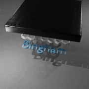
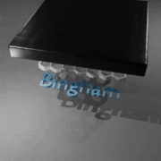

Mingrui Zhang
Ph.D. Candidate, Imperial College London
Applied Modelling & Computation Group
Email: mingrui.zhang18 (at) imperial.ac.uk
Biography
Mingrui Zhang
(张铭睿)
is a final year Ph.D. student at Imperial College London
advised by Prof. Matthew Piggott.
He obtained my Master's degree from Imperial College London and Bachelor's degree from Zhejiang University. Previously,
he worked with Dr. Tiantian Liu and Dr. Yuanming Hu at Taichi Graphics.
His research interests includes physics-based simulation, machine learning and their applications in scientific computing, computer graphics, generative AI.
News
- Genesis is released. Welcome contribution from everyone!
Research
(* indicates equal contribution)
@article{li2023graph,
title={From PIV to LSPIV: Harnessing deep learning for environmental flow velocimetry},
author={Mingrui Zhang, Siyi Li and Matthew Piggott},
journal={Journal of Hydrology},
volume={649},
year={2025}
}
@misc{yan2024phycage,
title={PhyCAGE: Physically Plausible Compositional 3D Asset Generation from a Single Image},
author={Han Yan and Mingrui Zhang and Yang Li and Chao Ma and Pan Ji},
year={2024},
eprint={2411.18548},
archivePrefix={arXiv},
primaryClass={cs.CV},
url={https://arxiv.org/abs/2411.18548},
}
![[UM2N]](assets/um2n/um2n_teaser.webp)
Spotlight Presentation
@article{zhang2024um2n,
author={Mingrui Zhang and Chunyang Wang and Stephan Kramer and Joseph G. Wallwork and Siyi Li and Jiancheng Liu and Xiang Chen and Matthew D Piggott},
title={Towards Universal Mesh Movement Networks},
journal={Advances in Neural Information Processing Systems},
volume={37},
year={2024}
}
@article{li2023graph,
title={End-to-end wind turbine wake modelling with deep graph representation learning},
author={Mingrui Zhang, Siyi Li and Matthew Piggott},
journal={Applied Energy},
volume={339},
year={2023}
}
@InProceedings{zhang22learning,
title = {Learning to Estimate and Refine Fluid Motion with Physical Dynamics},
author = {Zhang, Mingrui and Wang, Jianhong and Tlhomole, James B and Piggott, Matthew},
booktitle = {Proceedings of the 39th International Conference on Machine Learning},
year = {2022}
}
@article{song2022m2n,
author={Wenbin song and Mingrui Zhang and Joseph G. Wallwork and Junpeng Gao and Zheng Tian and Fangfei Sun and Matthew D Piggott and Junqing Chen and Zuoqiang Shi and Xiang Chen and Jun Wang},
title={M2N: mesh movement networks for pde solvers},
journal={Advances in Neural Information Processing Systems},
volume={35},
year={2022}
}
@article{yang23dffsi,
title = {Neural network control of fully-differentiable fluid-rigid structure interaction problem},
author = {Jianhui Yang and Mingrui Zhang and Andrew G Buchan and Liang Yang},
journal = {CIMNE 2023},
year = {2023}
}
@article{fang22complex,
title = {Complex locomotion skill learning via differentiable physics},
author = {Yu Fang and Jiancheng Liu and Mingrui Zhang and Jiasheng Zhang and Yidong Ma and Minchen Li and Yuanming Hu and Chenfanfu Jiang and Tiantian Liu},
journal = {arXiv preprint arXiv:2206.02341},
year = {2022}
}
@article{joe2022e2n,
title = {E2N: error estimation networks for goal-oriented mesh adaptation},
author = {Joseph G. Wallwork and Jingyi Lu and Mingrui Zhang and Matthew D Piggott},
journal = {https://arxiv.org/pdf/2207.11233.pdf},
year = {2022}
}
@InProceedings{zhang20unsupervised,
title = {Unsupervised Learning of Particle Image Velocimetry},
author = {Mingrui Zhang and Matthew D Piggott},
booktitle = {International Conference on High Performance Computing (ISC)},
year = {2020}
}
Miscellaneous
Doriflow:
A CPU/GPU fluid simulation engine integrated with Blender, supporting fluid-rigid coupling, white-water, non-newtonian fluids, surface reconstruction etc.
 
